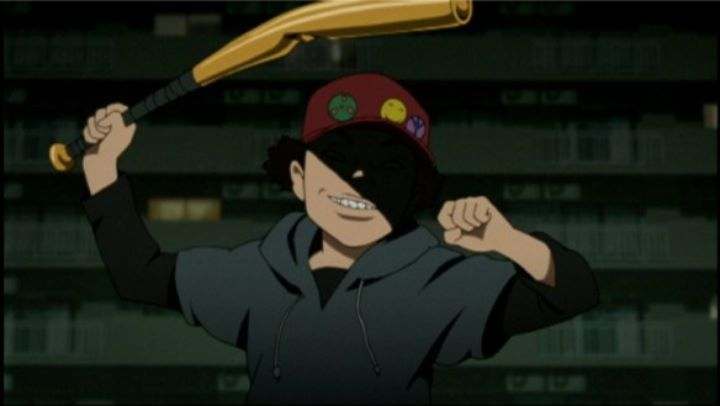

Satoshi Kon is an impressive auteur, but dying at the age of 46, he was only able to direct four anime films during his career. But the man had many stories to tell, and likely, many other movies that will never be made. He even dabbled as a manga author before finding success in animation, a sign that he was a fountain of unique ideas. Curiously, he didn't direct much work for television, aside from one 2004 series at the height of his career: "Paranoia Agent." The story goes that Kon made up the series based on an adundance of ideas he never ended up using for his feature films.And in a way, it shows, but more for better than not. The original story in episode one is that Tsukiko is a young graphic designer, who had just launched a popular mascot character and is being pressured by her company to design another hit. On her way home, she gets attacked by a kid on roller blades with a baseball bat: nicknamed "Lil' Slugger" by the media, the boy goes on a series of attacks on different characters throughout the show. But almost all of the victims seem to be undergoing mental stress and depression before being attacked: is he really saving them from having to face reality? And things do get more complicated as the series progresses: Lil' Slugger appears to be caught by episode five, but things are far from over for the rest of the show.While there was a general through-line for the story, the series is really more a character study of humanity than a mystery-thriller, even though the mystery behind the culprit is interesting. About halfway through the show, it takes a break for a few episodes to tell seemingly unrelated short stories and vignettes: one humourous episode is about a trio failing to commit suicide, and another is about an anime department working themselves to death. Lil' Slugger himself is the only commonality, a loose tie to the main series. You would think this would ruin the story, but on the contrary: despite a constant slow pace, the show is never boring. Kon's strength was always in his stories and imagination, as well as his directing ability: the series is well directed and edited, and the stories, both small and large, are very much in his style. It's like being able to watch a brand new finished film, in addition to several incomplete films or shorts, a treat for anyone who enjoyed his other work. And the quality of the show's story falls somewhere in the middle for me, not as fun or ambitious as "Paprika" but more interesting than "Tokyo Godfathers." That's pretty good company to be in.While Kon has dealt with adult themes in his movies before, "Paranoia Agent" feels a little more cynical than usual. There aren't really any innocent or pure characters to put your faith in. The opening scene for the first episode is of Japanese citizens lying to each other, with smirks on their faces, in text messages and phone calls. The show deals with bullying, dual-personality disorder, and illegal sex acts (prostituion, or spying on minors). It's more mature than most anime, even if it does find a sense of humour at times. It feels smart, which certain audiences will appreciate more than others. The animation production by studio Madhouse is solid compared to Kon's feature films, which is a impressive feat for a television series. Character designs still feel distinctly of Kon's style, and animation is... generally good. Admittedly, it is limited at times, but also shows impressive motion at other times. Actually, the visuals can also suffer in a similar way, looking a little unusual or ugly in people's static faces during the course of the series. In some cases, the visuals and animation take a more experimental style, one of many clever visual flourishes made to tell the story, making up for the series overall.The music is composed by long-time collaborator and digital-synth master Susumu Hirasawa. The fantastic opening, paired with images of the characters laughing in the middle of concerning environments, is iconic, but the music for the rest of the show doesn't pop quite so powerfully. The English dub is fair, probably better than any other English dubs for Kon's movies, but not much better than "Paprika.""Paranoia Agent' has long been out of print in North America, only briefly being available on DVD by Geneon Entertainment, in four single volumes, never re-released as a set. The DVD menus were made with passion for the show, and a four-episode commentary track with Satoshi Kon and crew is among the interesting bonus features, but the video quality isn't great due to interlacing. Sadly, the USA remains alone in not getting a more readily available release, let alone a Bluray (like the UK) as of 2019. It's a particular shame because "Paranoia Agent" is very much worth seeking out, even if it means picking up used copies on Ebay (at about $100, I bought it at a bargin). For fans on Kon's work desperately hoping for a new movie that will never come, "Paranoia Agent" is a treasure box of a series that will keep them satisfied. For anime fans, "Paranoia Agent" is one of the most maddening shows you'll find, right up there with cult classics like "Serial Experiments Lain." It's hard to escape reality, and "Paranoia Agent" reminds us why we shouldn't do so, at least not so aggresively... but it also provides a bizarre fantasy of its own to keep your mind off work or school. After watching, you'll be thinking about the show (and nothing else) for days.
- "Ani" More reviews can be found at : https://2danicritic.github.io/ Previous review: review_Paprika Next review: review_Parasite_Dolls